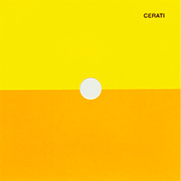
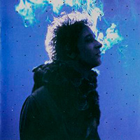
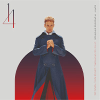
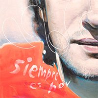
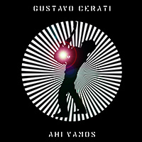
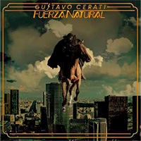

Discografia
-

"Amor amarillo"
ConocerAmor amarillo es el primer álbum de estudio solista de la carrera de Gustavo Cerati, publicado el 1 de noviembre de 1993. La única presentación oficial del álbum fue un acústico hecho para la radio FM 100 en 1994, ya que Gustavo lo consideraba un disco íntimo.
-

"Bocanada"
ConocerBocanada es el segundo álbum de estudio solista del músico argentino Gustavo Cerati, el primero luego de la disolución del grupo musical Soda Stereo. Fue publicado el 28 de junio de 1999 a través del sello discográfico BMG Ariola.
-

"Sinfonia"
Conocer11 Episodios Sinfónicos es un disco en vivo grabado por Gustavo Cerati en el Teatro Avenida de Buenos Aires, en agosto de 2001. El concierto consistió en él cantando, mientras Alejandro Terán dirigía la orquesta.
-

"Siempre es hoy"
ConocerSiempre es hoy es el tercer álbum de estudio como solista del músico de Argentina Gustavo Cerati, lanzado el 26 de noviembre de 2002, el mismo que al año siguiente sería nominado a los Premios Grammy en la categoría "mejor álbum latino de rock alternativo".
-

"Ahi vamos"
ConocerAhí vamos es el cuarto álbum de estudio como solista del músico artístico de Argentina Gustavo Cerati lanzado el 4 de abril de 2006 por Sony Music. El álbum obtuvo excelentes críticas y popularidad, especialmente en Argentina, Chile, Colombia y México.
-

"Fuerza natural"
ConocerFuerza natural es el quinto y último álbum de estudio de Gustavo Cerati en su etapa como solista, lanzado el 1 de septiembre de 2009. El disco se caracteriza por un sonido folk con presencia de guitarras acústicas y mandolinas.